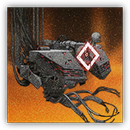

PRTS "源代码" Source Code
近战 远程 物理 法术；领袖 构装（源石造物）

|  |
PRTS "源代码"。PRTS的原始代码覆写了权限，它开始抹除你们在罗德岛上留存的一切痕迹。 |
“PRTS没有恶意，它只是访问了一下敌方数据库。
现在，在PRTS的作用下，这些“熟悉”的敌人现在有了不同以往的力量，Dr.■■■■。
不用惊慌，也不用惊讶。
你一定不会让我失望的，对吗？”
PRTS "源代码"丨"Source Code"
超巨型构装（源石造物；机械），无阵营
AC 27
先攻 +16（26）
HP 329（20d20+120）
速度 0 尺，飞行30尺
| 调整 | 豁免 | ||
|---|---|---|---|
| 力量 | 22 | +6 | +6 |
| 智力 | 22 | +6 | +14 |
| 调整 | 豁免 | ||
|---|---|---|---|
| 敏捷 | 10 | +0 | +8 |
| 感知 | 18 | +4 | +12 |
| 调整 | 豁免 | ||
|---|---|---|---|
| 体质 | 22 | +6 | +14 |
| 魅力 | 18 | +4 | +4 |
技能 调查+14，历史+14，察觉+12
抗性 火焰，冷冻，闪电，雷鸣，光耀，黯蚀
免疫 毒素，心灵；目盲，耳聋，恐慌，魅惑，力竭，麻痹，石化，中毒，震慑
感官 真实视觉1200尺，被动察觉22
语言 所有
CR 26（XP90,000；PB+8）
特质 Traits
同协抗性 Synchronized Resistance（4/日，或巢穴内5/日）。PRTS源代码在一次豁免检定中豁免失败时，可以将其改为豁免成功。如果拟态机械位于PRTS源代码60尺内并且在一次豁免检定失败时，PRTS也可以消耗自己的同协抗性使用次数使其改为豁免成功。
有限魔免 Limited Magic Immunity。PRTS可以随自己意愿的免受3环或更低环阶法术的效应影响或侦测。它在对抗其他法术和魔法效应时所作的豁免检定具有优势。
相位锚定 Phase Anchor。PRTS无法变形，其免疫于所有传送、放逐和强制位移效应。
实相装甲 Reality Armor。PRTS将任何命中自己的重击视为普通命中。此外，PRTS受到的任何穿刺、挥砍、钝击伤害具有-8减值。
安全待机模式 Safe Standby Mode。 如果拟态机械位于战场上且未处于失能，则PRTS源代码进入"待机模式"，面对攻击和效应时视为处于全身掩护。
危机响应模式 Crisis Response Mode。 如果拟态机械位于战场上且处于失能，则PRTS源代码进入"响应模式"，获得下述效果：
- 结构瘫痪。PRTS的速度降至0，不可执行动作。
- 核心泄露。对PRTS的攻击即便失手也会造成伤害，但此时所有伤害骰取最低。
- 增速修复。PRTS每次受到伤害时，为拟态机械恢复20点生命值。
- 热重启。拟态机械生命值恢复至200时，PRTS脱离响应模式回到待机模式。
清除协议 Clearing Protocol。PRTS源代码投掷先攻后的1分钟，若生命值不低于1，则立即对1200尺内每个其所选的生物造成105（10d10+50）无法减免的光耀伤害。生命值被此伤害降至0的生物直接死亡。
动作 Actions
多重攻击 Multiattack。PRTS 源代码发动四次破坏射线攻击。其可以将其中一次攻击替换为使用侵入式调用。
破坏射线 Destructive Ray。近战或远程攻击检定：+14，触及10尺或射程600尺。命中：35（6d10）力场伤害。失手：半伤。
侵入式调用 Intrusive Invoke。力量豁免检定：DC22，单个120尺内PRTS所选的生物。失败：70（20d6）钝击伤害。成功：半伤。此外，PRTS还可以为豁免失败的生物应用选择下述一个效应。
- 禁锢。目标陷入束缚，直到PRTS的回合开始。
- 迟缓。目标无法执行反应，且移动速度减少10尺，直到其下回合结束。
- 拖拽。目标被移动至距离原地点60尺内的空地，并陷入倒地。
- 缴械。目标所持用的一个物件被夺走，直到其以一个动作将其夺回。
施法 Artcasting。PRTS源代码施展以下一道法术，无需法术成分并使用智力作为施法属性（法术豁免 DC 22，法术攻击命中+14）。
随意：法师之手，修复术，奇术，灼热金属（四环版本）
每项3/日：解除魔法，缓慢术，连锁闪电，解离术，放逐术
反应 Reactions
限制写入 Restrict Write。触发：当PRTS源代码120尺内的一名生物要执行动作时。响应—感知豁免检定：DC22，触发反应的目标。失败：目标本回合无法执行动作。目标也可以选择不受影响，改为受到50点无法减免的力场伤害。
传奇动作 Legendary Actions
传奇动作次数：3（巢穴内4）。PRTS 源代码可以在另一生物的回合后立即消耗一次传奇动作来执行以下一道动作。PRTS 源代码在其回合开始时回复所有已消耗的传奇动作次数。
指令：抓取 Command: Fetch。PRTS 源代码执行一次侵入式调用，但不会造成伤害。
指令：部署 Command: Deploy。PRTS 源代码选择120尺内的一个空地产生虚影，准备在目标空间召唤一个生命值不高于200的源石造物生物。在下次先攻轮到20时，若目标空间未被占据，该生物出现在那里并以此为先攻开始自己的回合。
指令：激活 Command: Activate。PRTS 源代码使用施法施展一个环阶不超过6环的法术。PRTS直至其下个回合开始都无法再执行此动作。